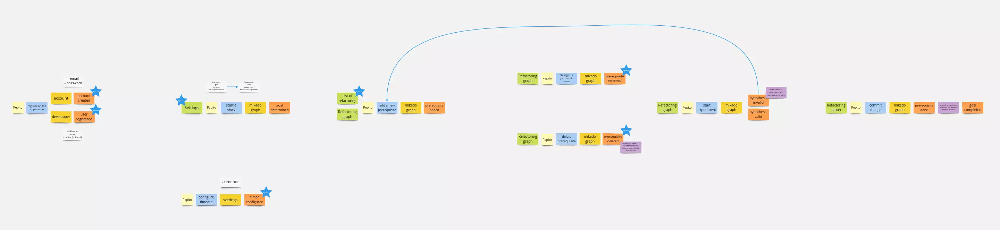
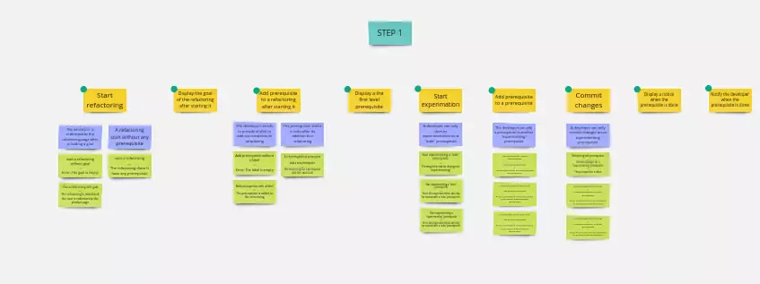
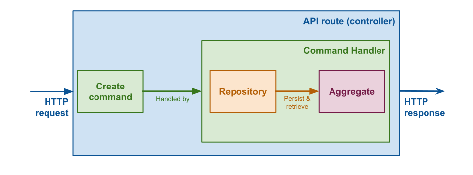
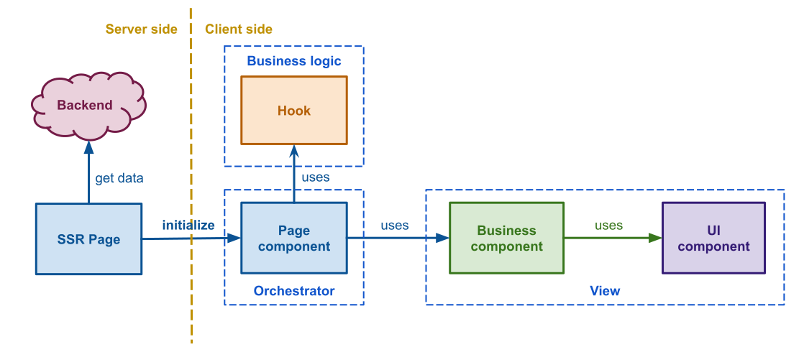
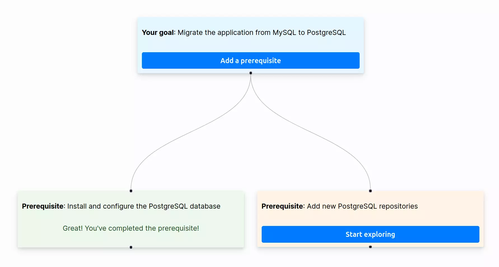

In this blog post, I will explain how I built MikadoApp and the choices I made. If you are not familiar with the Mikado Method, I encourage you to read the blog I’ve written to understand how you can break down a big task into smaller ones:

MikadoApp is an open-source application. Don’t hesitate to contribute to the application to improve it. Submit issues if you find bugs or have ideas for improvement. Pull requests (PRs) for enhancing or adding additional features are also very welcome.
Try the self hosted version of the MikadoApp, here is the link:
Step 1: Define what I want?
Before starting to code the application, it is better to define what you want. An event storming workshop is a great tool to get the big picture of the project, and then we can start designing the application. This workshop is a good way to gather both technical and non-technical people in the same room to facilitate communication. Non-technical people can share their knowledge with technical people to ensure mutual understanding of expectations.
Even though I’m the only developer on the project, I decided to do an Event Storming workshop. It helps me challenge my ideas, even when working alone. Starting to code without having the big picture in mind can be complicated. When you are alone on a project, you play several roles such as a UX designer, product manager, and developer, for instance.In other words, I have several people in my head that I need to align.
I like this workshop because it allows you to think without any limitations. I collected every domain event that seemed relevant, even if they were not immediately important. Then, I defined the minimal scope of the application to ship the first version quickly. I think it is better to release something working with a few features and then improve it instead of trying to ship everything at the same time. It decreases the risk of delivering nothing in production.

The business of the application was not complicated, so I decided to break down the event storming into a way where each domain event corresponds to a user story. I didn’t spend time writing user stories but I wanted to dig a bit into each user story before coding them. I did an example mapping workshop. Similar to the event storming workshop, it is a good way to share knowledge between non-tech and tech people. Doing an example mapping alone is not the most efficient way to do it, but I wanted to challenge my thoughts on specific stories to have a clear vision of what I’m going to code.

Before starting the project, the only technical choice I made was to use the Next.js framework. I had only worked on a POC for a few days during my previous experience. I didn’t know it well, but it looked promising. Another reason for this choice was its ease of deployment on Vercel. I didn’t want to spend time configuring the application deployment. I only wanted to focus on delivering features instead of configuring a server.
Step 2: Start working on the first version of the MVP.
Then I started working on the first feature. My goal was to ship an MVP that works to validate whether what I imagined during the workshops was good or not. This means I did not focus on a fancy user interface. I am not a designer, and I didn’t want to spend too much time on it. Moreover, I wanted to delay the choice of the storage system as much as possible. It’s good to learn a maximum of things before making any decisions.
Let’s dig a bit into my tech choices. I began working on MikadoApp in July 2023. I choi for the latest stable version of Next.js (v13) with the new app routing system. I didn’t use server actions due to their instability at the time.
As a TDD practitioner, understanding how to test my code when starting work on a new technology is crucial. The backend part was relatively straightforward for me, given my experience in creating backend applications for over a decade. Let me explain what I’ve done.

As described in the previous diagram, I created a new Next.js API route which is a controller to handle HTTP requests and return an HTTP response. A command is then created with the data received by the controller and is passed to a command handler that executes all the actions needed to perform the use case. The command handler uses a repository to persist and retrieve data from the storage system, building the MikadoGraph aggregate.
Note: An aggregate is a collection of objects that represents a domain concept.
It was a bit different for the frontend part as Next.js has a Server Side Rendering mechanism that I had not used before. Let me explain what I’ve done.

As described in the previous diagram, the SSR (Server-Side Rendering) page is responsible for retrieving all the necessary data to initialize the page. Then, the pre-rendered page is sent to the browser to render the ‘page component’. The purpose of this component is to orchestrate use case handling. It acts as a bridge between the custom hooks, which manage business logic, and the view (Business and UI components) responsible for rendering the user interface.
I’ve written a blog post about how to organize a React application to facilitate testing. Please, have a look at the article to understand why I made those choices:

Finally, I had a working application, great! As you can see in the following video, the first version of the application was ugly, toast messages were displayed in the console, the mikado graph data was stored in memory but that was fine. I checked that the functional choices were good and now I just needed to focus on the next steps which are design and storage.
Step 3: Finalize the MVP
From my point of view, it is really important to be able to deploy an application in production or in an environment where users can try the application. It is a good way to get feedback from them. Even though I was alone, it was interesting to test the application in production mode. That’s why I decided to implement the storage system. I used Supabase, which provides an open-source alternative to Firebase. To be honest, I mainly chose it because I wanted to try it.
The next and final step was to make the user interface fancy. I chose several libraries to prevent reinventing the wheel. As we represent the Mikado Method as a graph, I needed a powerful library that eases the creation of a node-based UI. I found React Flow. At this step, the notification system only used the console, which wasn’t user-friendly. I decided to use React-toastify to handle that part. The last thing I needed to improve was the form management, especially the error management. In the early first version, I used HTML5 validation, but it didn’t provide a good user experience. I didn’t use a library to handle that because my forms are really simple.

The previous image is a screenshot of the first version of the MikadoApp. Try the self hosted version of the MikadoApp:
Don’t forget, MikadoApp is an open-source application. Don’t hesitate to contribute to the application to improve. Any help is very welcome.
Deploying the initial version of an application as soon as possible is great, but it’s even better when you can observe what happens in production. With a robust alerting system, we can react promptly and address issues before they become visible to too many users. I use Vercel’s free plan, which provides some basic logs, but it is not enough. I decided to use Sentry as an incident manager. It gathers all errors that occur in production and sends me an email when something goes wrong.
What went wrong?
In memory repository
Using in-memory repositories is useful for deferring choices, allowing you to prioritize delivering business value over dealing with technical aspects. Once you’ve a clear understanding and confidence, you can make the best choices. I recommend working this way when building software. However, in this project, I encountered some problems.
In development mode, Next.js doesn’t compute the entire application. It only computes a page when you display it the first time. That means each time you go on another page the in memory repository is reset. It’s a bit annoying when you want to do manual testing but it works well in production mode.
Moreover, it doesn’t work on Vercel because each API route is deployed as a serverless function. This means your routes have to be stateless, and you can’t keep anything in memory.
Next.js cache
I encountered another issue that took some time to resolve. The prerequisites didn’t appear after adding them to the Mikado graph, even if I manually refreshed the page. I didn’t understand what happened initially, but I found out that Next.js has a caching mechanism.
To disable the cache on a specific page, export the following const:
export const revalidate = 0;
export default async function MikadoGraphPage({ params: { id } }: { params: { id: string } }) {
const mikadoGraphView = (await getMikadoGraphById(id));
return (
<div className={styles.dashboard}>
<Page mikadoGraphView={mikadoGraphView} />
</div>
);
}
Conclusion
When starting a new project, prioritize delivering business value over technical aspects. Deploy your application as soon as possible to gather feedback from internal or external users. Then, iterate to improve your product.